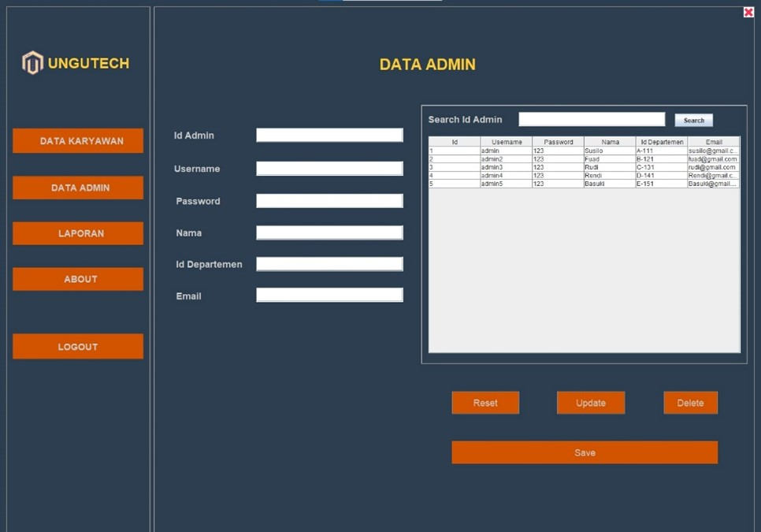
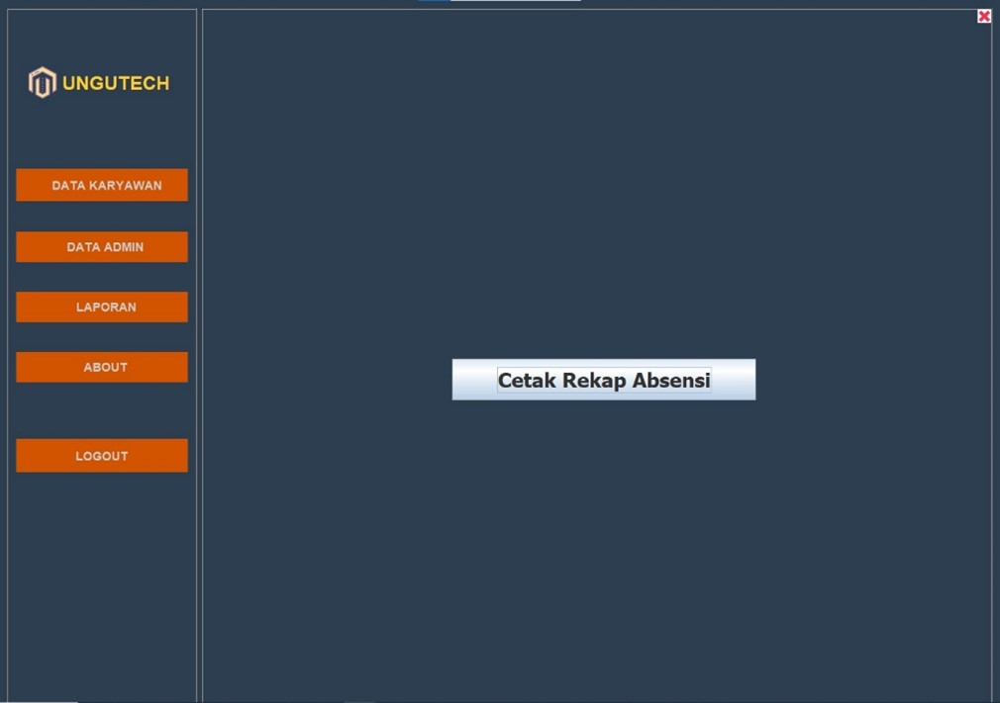
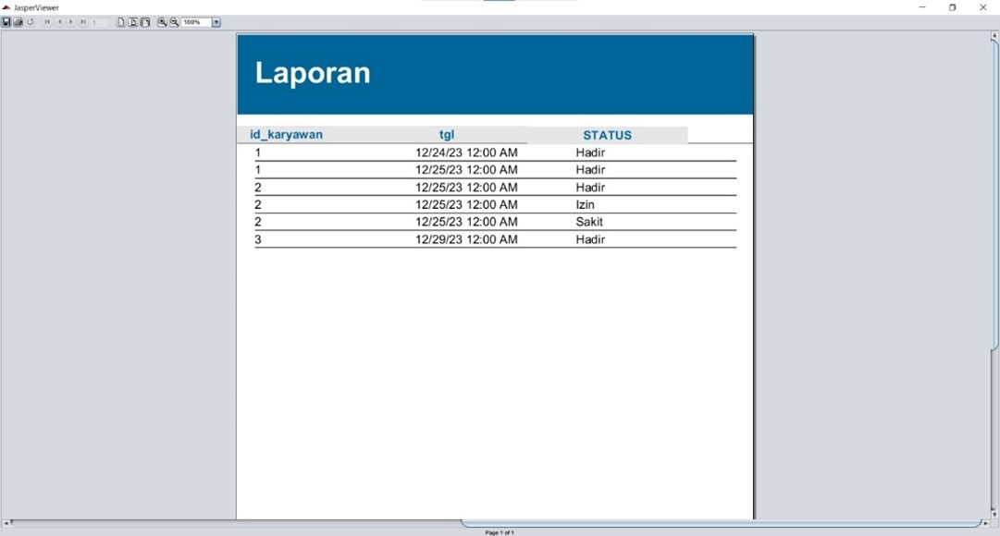
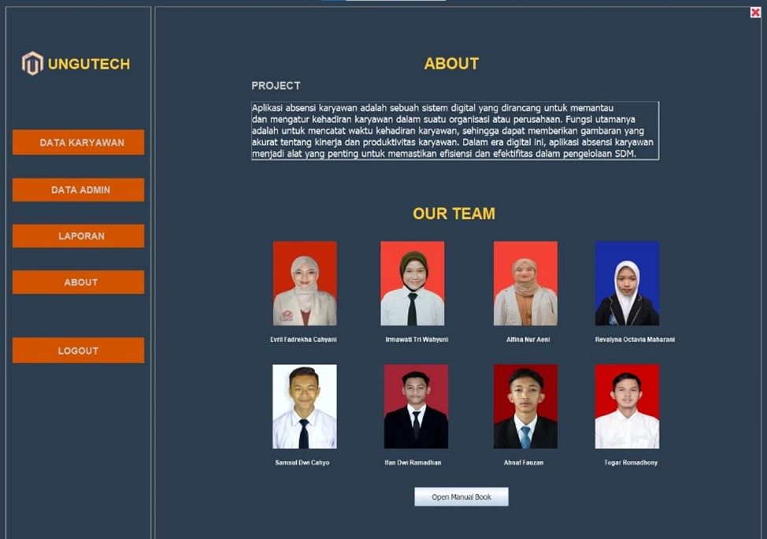
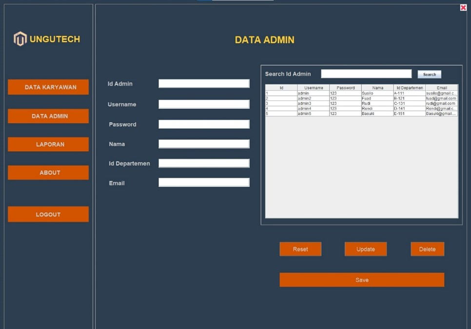
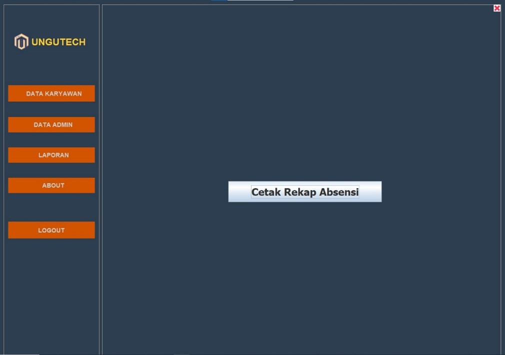
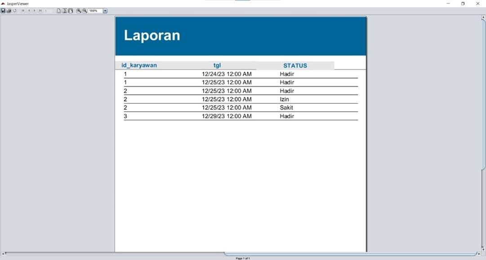
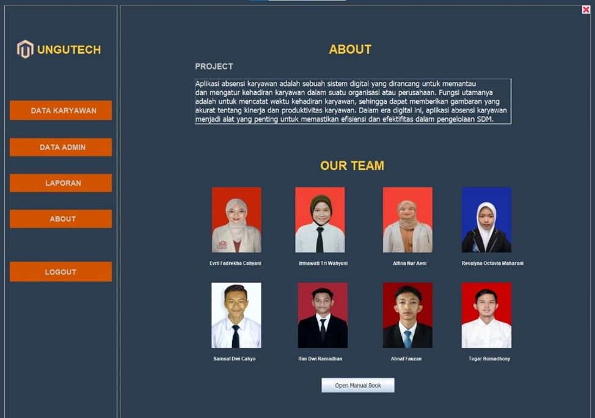

Aplikasi PT. Akses Net
 







Aplikasi Absensi Karyawan" adalah sebuah sistem digital yang dikembangkan menggunakan bahasa pemrograman Java dan dirancang untuk berbasis desktop. Tujuannya adalah untuk memantau dan mengatur kehadiran karyawan dalam suatu organisasi atau perusahaan. Fungsi utama dari aplikasi ini adalah mencatat waktu kehadiran setiap karyawan. Dengan catatan ini, aplikasi dapat memberikan gambaran yang akurat tentang kinerja dan produktivitas karyawan. Dalam konteks era digital, aplikasi absensi karyawan menjadi alat yang sangat penting untuk memastikan efisiensi dan efektivitas dalam pengelolaan Sumber Daya Manusia (SDM). Aplikasi ini memungkinkan manajer atau tim HR untuk dengan mudah memantau kehadiran karyawan, mengidentifikasi pola kehadiran, dan menganalisis data kehadiran untuk pengambilan keputusan yang lebih baik terkait manajemen karyawan. Dengan menggunakan aplikasi ini, perusahaan dapat meningkatkan kontrol terhadap kehadiran karyawan, meningkatkan efisiensi operasional, serta mengoptimalkan produktivitas sumber daya manusia mereka. Ini juga dapat membantu perusahaan untuk mematuhi peraturan ketenagakerjaan terkait waktu kerja dan jam lembur. Melalui implementasi aplikasi absensi karyawan, perusahaan dapat mencapai tujuan manajemen SDM yang lebih baik dalam era digital ini, yang ditandai dengan penggunaan teknologi untuk meningkatkan efisiensi dan efektivitas operasional.